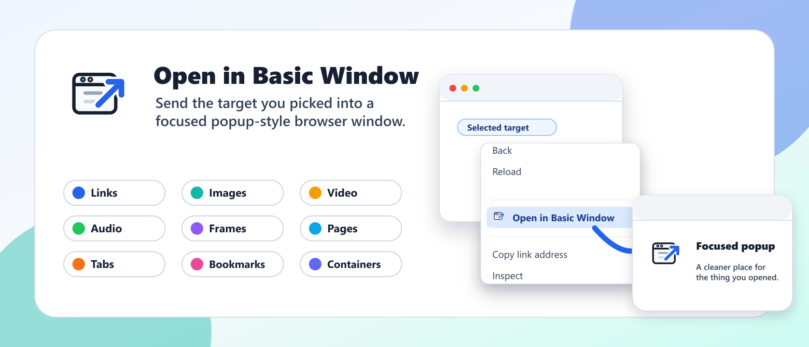

Keep references visible
Pop a page, link, or tab into a separate basic window so it can sit beside your work.
Browser extension for Chrome, Edge, and Firefox
Send links, media, tabs, frames, pages, and supported Firefox bookmarks into a basic window without rearranging your whole browser session.

Why it helps
Pop a page, link, or tab into a separate basic window so it can sit beside your work.
Open images, video, and audio in a focused window when a full browser tab feels too heavy.
The extension uses browser APIs only. There is no tracking, analytics, or data collection.
Supported contexts
Open in Basic Window adds one focused action to the places browser context menus already appear, then sends the selected target to a basic popup-style window.
Right-click a link, image, tab, frame, or page. Choose the extension action. Keep the result beside your current work.
Screenshots
Privacy
Everything happens locally in your browser through extension APIs. Open in Basic Window does not collect, store, transmit, or sell user data.